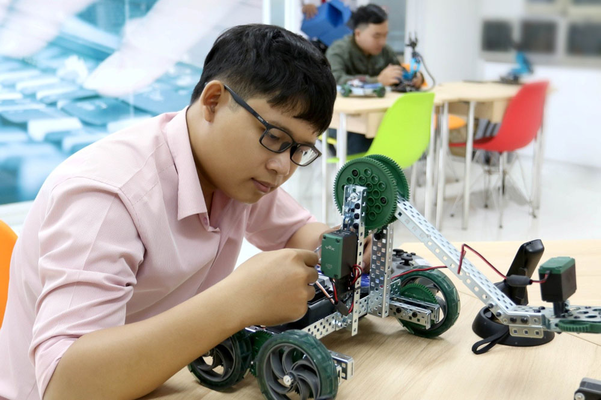
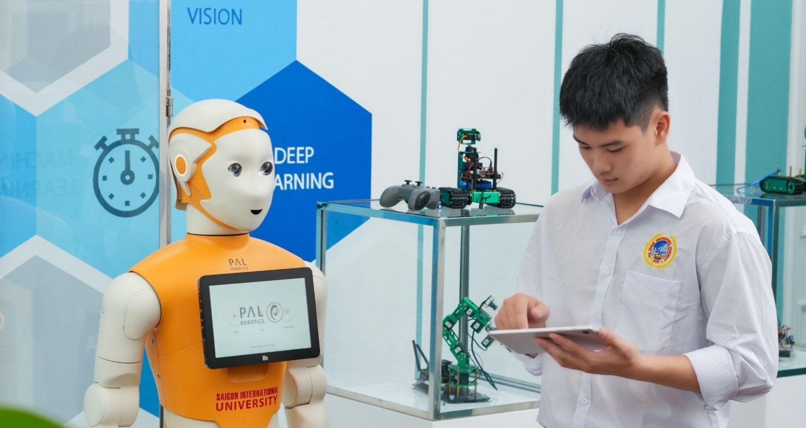
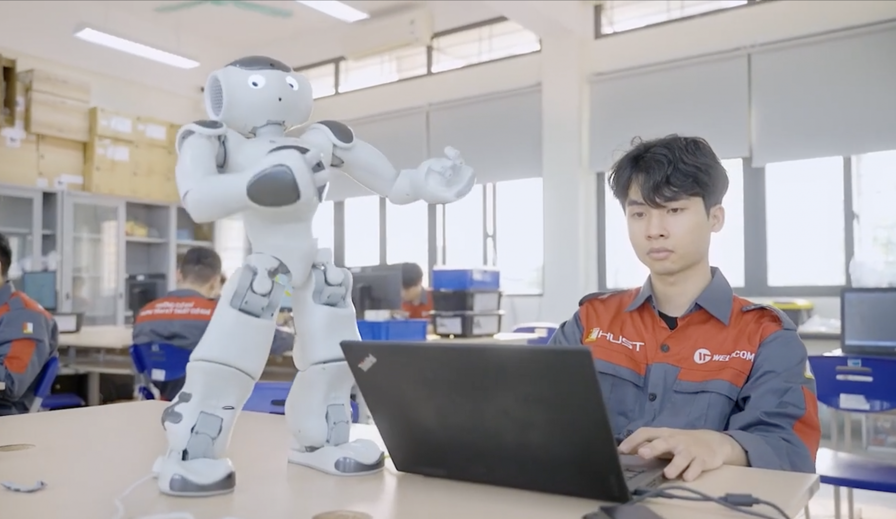

Ngành Công Nghệ Thông Tin (IT) và Khoa Học Máy Tính là một lĩnh vực nghiên cứu và ứng dụng công nghệ máy tính, phần mềm, mạng máy tính và các hệ thống thông tin trong đời sống thực tế.
Các chuyên ngành chính:
- Phát Triển Phần Mềm: Thiết kế và xây dựng các ứng dụng phần mềm
- An Ninh Mạng: Bảo vệ hệ thống và dữ liệu từ các mối đe dọa an toàn
- Khoa Học Dữ Liệu (Data Science): Phân tích và xử lý dữ liệu lớn
- Trí Tuệ Nhân Tạo (AI): Phát triển các hệ thống thông minh
- Quản Trị Hệ Thống: Quản lý và duy trì hạ tầng công nghệ thông tin
- Thiết Kế Web & Mobile: Phát triển giao diện và ứng dụng di động

IT Career

Computer Science
Self Learning

Programming
IT Study

IT Career Path
Computer Science Courses
Computer Science and IT